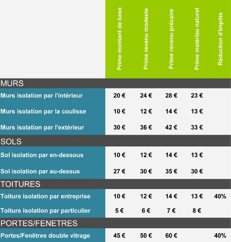
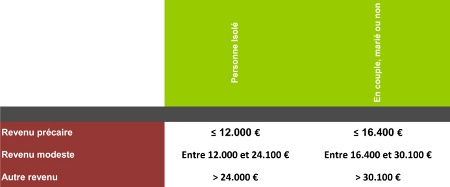
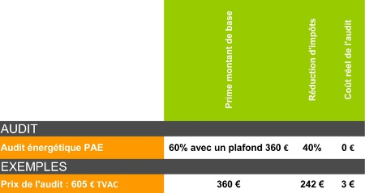
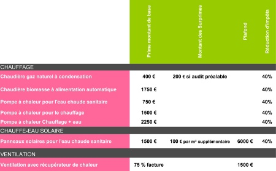

Diminuer les pertes


Audits énergétiques PAE

Améliorer le rendement des équipements

Formulaires aides et primes
Demande de prime pour l'audit énergétique PAE : formulaire
Demande de prime pour l'isolation de la toiture: formulaire et annexe
Demande de prime pour l'isolation des murs:formulaire et annexe
Demande de prime pour l'isolation des plancher: formulaire et annexe
Demande de prime pour l'installation d'une Pompe à chaleur: formulaire et annexe
Demande de prime pour l'installation d'un chauffage biomasse formulaire et annexe
Demande de prime pour l'installation d'une chaudière condensation formulaire et annexe
Demande de prime pour l'installation d'un système double flux : formulaire et annexe
Informations
L'énergie et l'écologie en région Wallonne
Video explicative de l'audit énergétique PAE
Réduction d'impôt pour investissements économiseurs d'énergie
Eco-construction
Nous sommes une équipe de 3 architectes spécialisés dans le domaine de l'écologie. Si vous partagez notre intérêt pour l'écoconstruction, nous vous aidons à concrétiser vos projets dans un soucis d'économie d'énergie. Notre travail allie passion, analyse et rigueur. Nous nous mettons à votre service en combinant vos souhaits avec notre créativité. Nous allions les jeux de volume, le traitement de la lumière, l'intégration au site, les matières, les couleurs, en tenant compte des contraintes techniques et administratives pour vous proposer des espaces qui répondent à vos besoins. Pour nous, il n'y a pas de petits projets, nous vous accompagnons à l'origine de vos idées jusqu'à la finalisation du bâtiment. Notre équipe réalise également des audits énergétiques PAE dans le respect de l'architecture et du confort et des certificats PEB. Nous couvrons une grande partie de la Wallonie. N'hésitez pas à nous contacter à ce sujet et pour tout projet d'architecture.
Anne-Sophie Audrit Architecte diplômée de l'ISALL, spécialisée en restauration. Formation en expertise immobilière. Auditeur agréé pour les audits énergétiques PAE en Région Wallonne. Certificateur agréé PEB Formation "Physique des bâtiments: efficacité énergétique des constructions en bois" Responsable PEB
Véronique Maes Architecte diplômée de l'ISALL, spécialisée en architecture organique. Mémoire réalisé sur le confort thermique. Auditeur agréé pour les audits énergétiques PAE en Région Wallonne. Certificateur agréé PEB Formation "Physique des bâtiments: efficacité énergétique des constructions en bois" Responsable PEB
Xavier Wolfs Architecte diplômé de l'ISALL, spécialisé en restauration. Auditeur agréé pour les audits énergétiques PAE en Région Wallonne. Certificateur agréé PEB Responsable PEB Formation "concept de la maison passive". Formation "Physique des bâtiments: efficacité énergétique des constructions en bois"
Anne-Sophie Audrit
Rue des Vennes, 126-128, 4020 Liège
Tél : 0494 90 16 35
Email : anne-sophie@3eco.be
Expertise immbolière + numéro d'agrément
Véronique Maes
Rue Joseph Wanet, 21, 5020 Vedrin
Tél : 0474 33 44 24
Email : veronique@3eco.be
TVA : BE0819 013 857
Xavier Wolfs
Rue des Vennes, 126-128, 4020 Liège
Tél : 0486 10 86 46
Email : xavier@3eco.be
TVA : BE0809 454 706
Audits énergétiques PAE RW09/145
Certificats PEB
Responsable PEB PEB-00017-R